Astuces techniques pour Wikipédia
© Federico Scrinzi / Paolo Massa, CC-BY 2.5
User:Arkanosis — WikiConvention francophone 2016
{kind=link}
Oups…
{kind=link}
© User:Arkanosis — CC-BY 4.0 — WikiConvention francophone 2016
Se tenir au courant
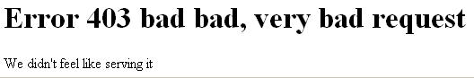
c̶ Arbitrarily0, DP
{kind=link}
© User:Arkanosis — CC-BY 4.0 — WikiConvention francophone 2016
Raccourcis clavier
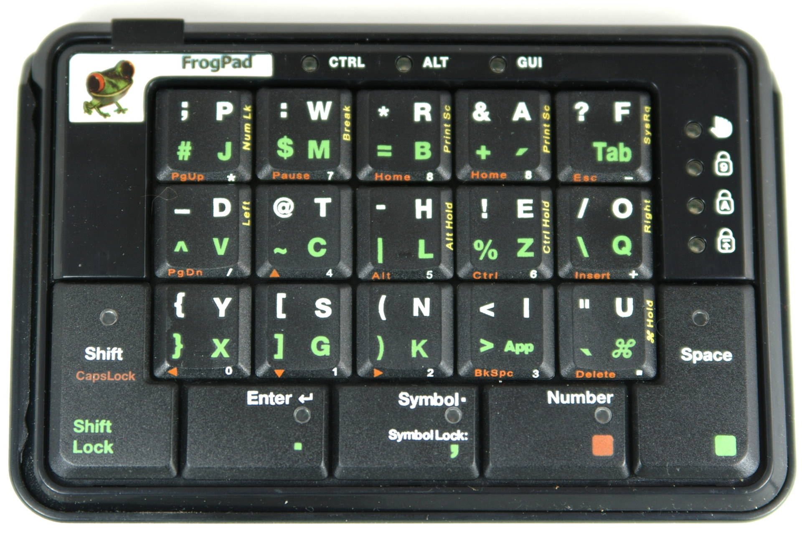
© Hustvedt, CC-BY-SA 3.0
{kind=link}
- ctrl + maj + e : éditer
- ctrl + maj + h : historique
- ctrl + maj + w : suivre
- ZAC Pajol
- Penser aux infobulles !
© User:Arkanosis — CC-BY 4.0 — WikiConvention francophone 2016
Historique
- Gadget DeluxeHistory
- Labs Tools & co.
- Atom / RSS
Contributions
- Labs Tools & co. (bis)
- WikiScan
- Atom / RSS (bis)
© User:Arkanosis — CC-BY 4.0 — WikiConvention francophone 2016
Au menu
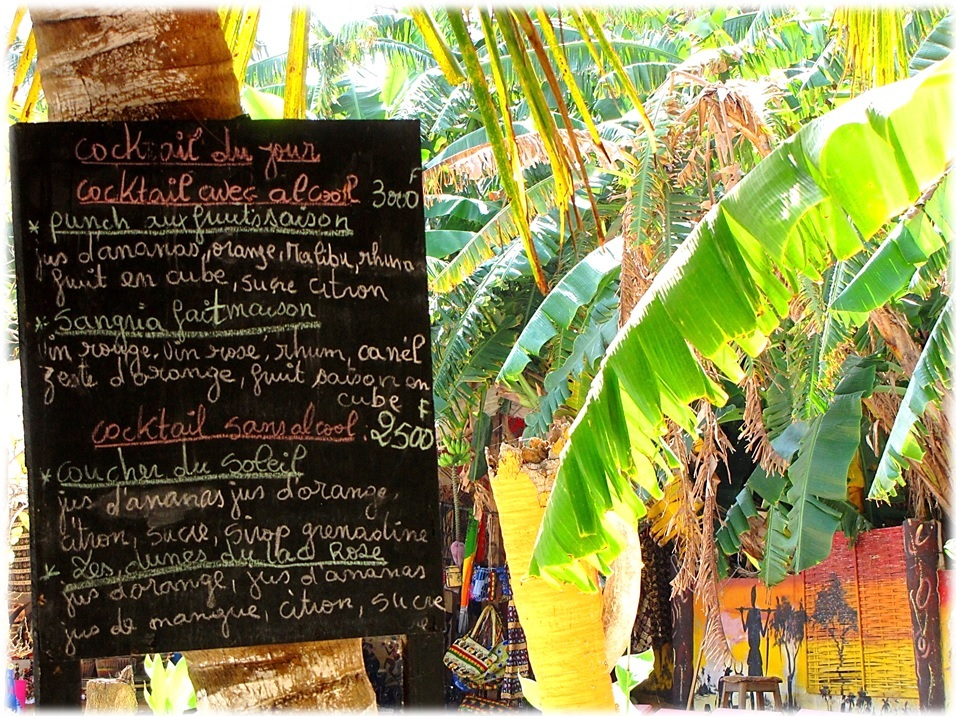
© T.K. Naliaka, CC-BY-SA 4.0
{kind=link}
© User:Arkanosis — CC-BY 4.0 — WikiConvention francophone 2016
Transclusions
© VanessaQ, CC-BY-SA 3.0
Mékeskidi ?
{kind=link}
- Modèles (évidemment)
- Pages arbitraires (si, si !)
- … même les pages spéciales ! (TADAM !)
© User:Arkanosis — CC-BY 4.0 — WikiConvention francophone 2016
Liens
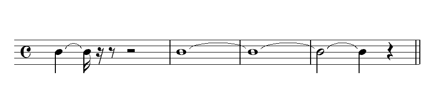
© Yves30, GFDL 1.2+
Tout un art…
{kind=link}
- [[Page]]
- [[Page]]s
- [[Page|Texte]]
- [[:Catégorie:Page]] ou [[:Fichier:Page]]
- [[:m:Page]] (cf. [[Spécial:Interwiki]])
- [[:wikt:en:Page]]
© User:Arkanosis — CC-BY 4.0 — WikiConvention francophone 2016
Liens (quand il y en a trop)
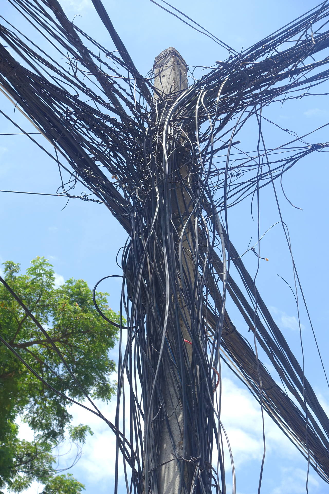
c̶ Daderot, CC-0
{kind=link}
- [[Spécial:Recherche de lien]]
- [[MediaWiki:Spam-blacklist]]
- [[MediaWiki:Titleblacklist]]
- [[:meta:MediaWiki:Spam-blacklist]]
- [[:meta:Title blacklist]]
- [[MediaWiki:Spam-whitelist]]
© User:Arkanosis — CC-BY 4.0 — WikiConvention francophone 2016
Discuter
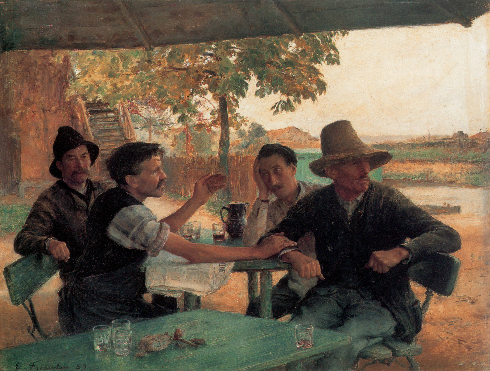
c̶ Émile Friant, DP
{kind=link}
- Réponses, images, miniatures, retour à la ligne…
- Mentions
- [[Spécial:Notifications]]
© User:Arkanosis — CC-BY 4.0 — WikiConvention francophone 2016
Pages spéciales
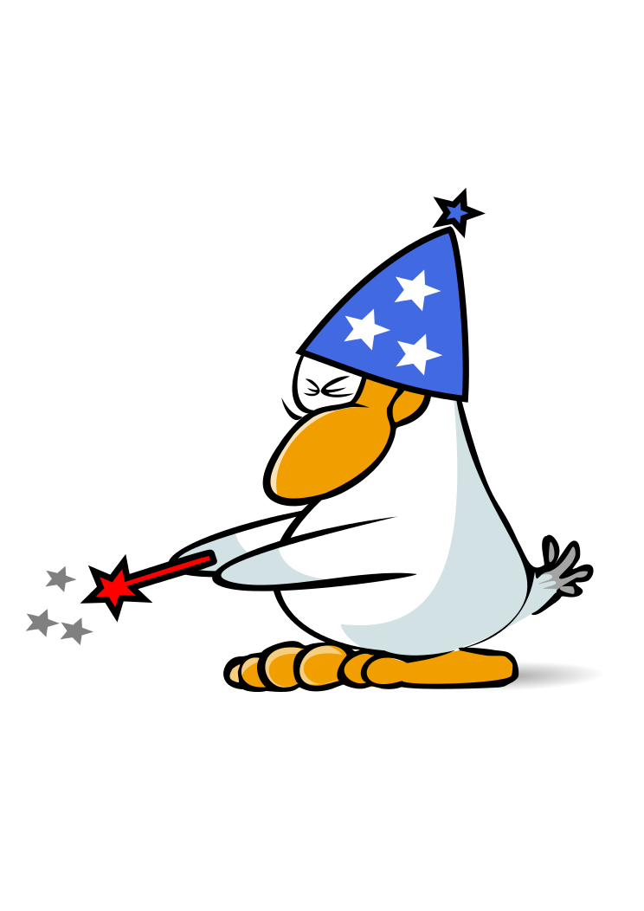
© Mimooh, CC-BY-SA 3.0
{kind=link}
- [[Spécial:Pages liées]]
- [[Spécial:Interwiki]]
- [[Spécial:Recherche de lien]]
- [[Spécial:Statistiques]]
- [[Spécial:Pages spéciales]]
© User:Arkanosis — CC-BY 4.0 — WikiConvention francophone 2016
Pages spéciales (suite)
- [[Spécial:Nearby]]
- [[Spécial:Rechercher]]
- [[Spécial:Comparer des pages]]
- [[Spécial:Créer un compte]]
- [[Spécial:Version]]
© User:Arkanosis — CC-BY 4.0 — WikiConvention francophone 2016
Configuration
© Günther Paalzow, Bundesarchiv, CC-BY-SA 3.0
{kind=link}
- phabricator.wikimedia.org/diffusion/OMWC/browse/master/wmf-config/
- InitialiseSettings.php
© User:Arkanosis — CC-BY 4.0 — WikiConvention francophone 2016
Purge
c̶ United States Marine Corps, DP
{kind=link}
- F5
- ctrl + F5
- ?action=purge
- ?action=purge&forcelinkupdate=1
- ?action=purge&forcerecursivelinkupdate=1
- Null edit
© User:Arkanosis — CC-BY 4.0 — WikiConvention francophone 2016
Tuning
.jpg){kind=link}
© User:Arkanosis — CC-BY 4.0 — WikiConvention francophone 2016
Traduire
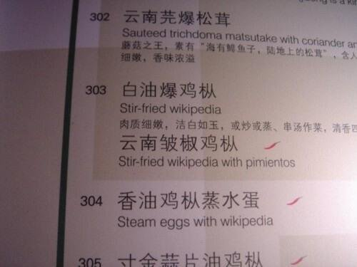
© Jim Benson
© User:Arkanosis — CC-BY 4.0 — WikiConvention francophone 2016
Adresse
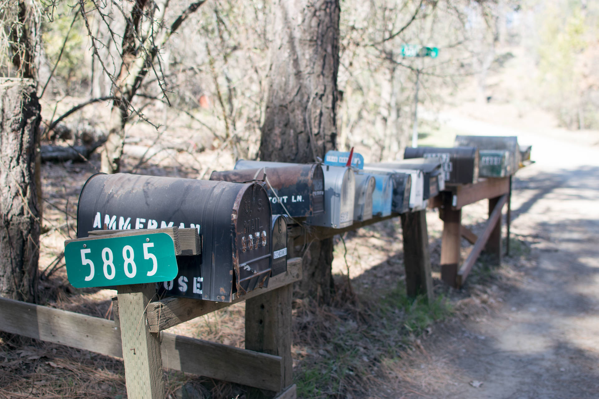
© Ryanx7, CC-BY-SA 4.0
{kind=link}
© User:Arkanosis — CC-BY 4.0 — WikiConvention francophone 2016
Gadgets

© Butch, CC-BY-SA 3.0
- Spécial:Préférences#mw-prefsection-gadgets
- Spécial:Gadgets
- MediaWiki:Gadgets-definition
- Spécial:GadgetUsage
© User:Arkanosis — CC-BY 4.0 — WikiConvention francophone 2016
Scripts

© Calin99, GPLv3
© User:Arkanosis — CC-BY 4.0 — WikiConvention francophone 2016
API
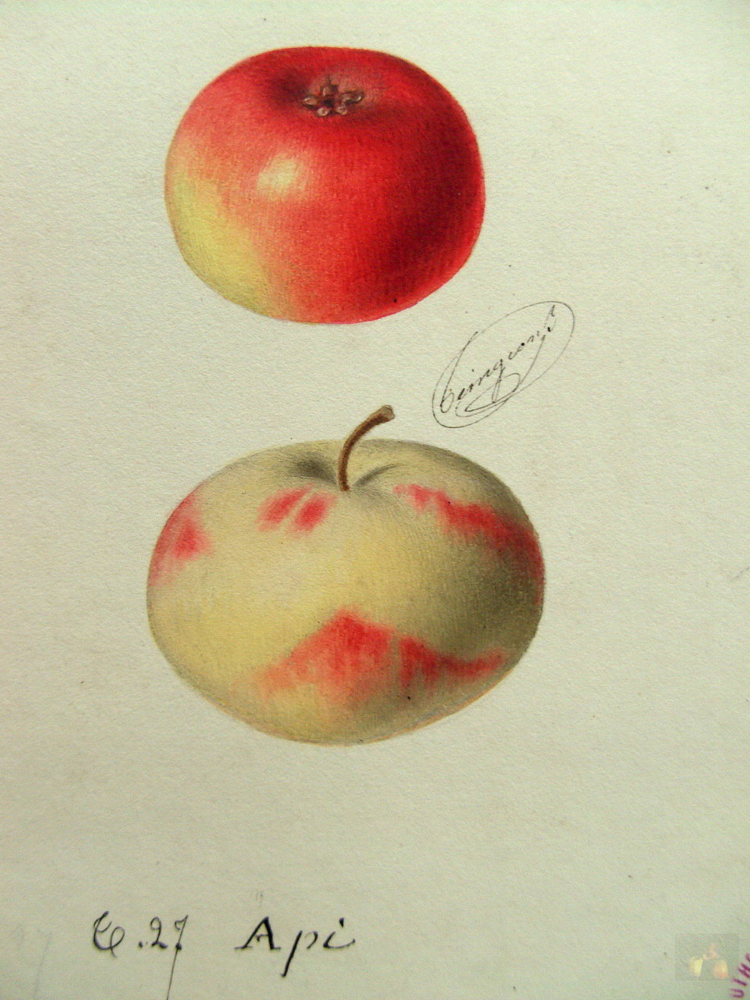
c̶ Alphonse Mas, DP
{kind=link}
© User:Arkanosis — CC-BY 4.0 — WikiConvention francophone 2016
Labs
{kind=link}
© User:Arkanosis — CC-BY 4.0 — WikiConvention francophone 2016
Modèles
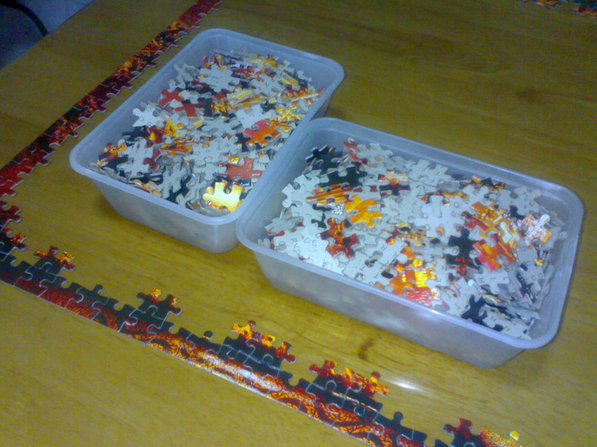
© Octahedron80, CC-BY-SA 4.0
{kind=link}
{{{1}}}{{{param}}}{{{param|défaut}}}- Write-only! (même pour les experts)
© User:Arkanosis — CC-BY 4.0 — WikiConvention francophone 2016
{{documentation}}
[[Category:Templates|{{PAGENAME}}]]
Modules
{kind=link}
local p = {}
function p.foo()
return 'Hello Lua!'
end
return p
- Read-write! (du moins pour les experts)
© User:Arkanosis — CC-BY 4.0 — WikiConvention francophone 2016
--script that retrieves basic data stored in Wikidata, for the datamodel, see https://www.mediawiki.org/wiki/Extension:Wikibase_Client/Lua
local wd = {}
local modules = { }
local modulesNames = {
reference = 'Module:Wikidata/Références',
linguistic = 'Module:Linguistique',
formatDate = 'Module:Date complexe',
formatNum = 'Module:Conversion',
langmodule = 'Module:Langue',
cite = 'Module:Biblio',
getData = 'Module:Wikidata/Récup',
entities = 'Module:Wikidata/Formatage entité',
tools = 'Module:Wikidata/Outils',
globes = 'Module:Wikidata/Globes',
langcodes = 'Module:Dictionnaire Wikidata/Codes langue', -- gros et rarement utilisé
weblink = 'Module:Weblink'
}
local function loadModule( t, key )
if modulesNames[key] then
local m = require( modulesNames[key] )
t[key] = m
return m
end
end
setmetatable( modules, { __index = loadModule } )
local tools = require 'Module:Wikidata/Outils'
local translate = tools.translate
local defaultlang = mw.getContentLanguage():getCode()
function wd.getLabel(entity, args)
modules.entities.getLabel(entity)
end
function wd.formatEntity(entity, args)
return modules.entities.formatEntity(entity, args)
end
function wd.addtrackingcat(prop, cat) -- doit parfois être appelé par d'autres modules
if type(prop) == 'table' then
prop = prop[1] -- devrait logiquement toutes les ajouter
end
if not prop and not cat then
return error("no property provided")
end
if not cat then
cat = translate('trackingcat', prop or 'P??')
end
return tools.addcat(cat )
end
local function removeblanks(args)
for i, j in pairs(args) do
if j == '' then args[i] = nil end
end
return args
end
local function unknownvalue(snak, label)
local str = label
if type(str) == "function" then
str = str(snak)
end
if (not str) then
if snak.datatype == 'time' then
str = translate('sometime')
else
str = translate('somevalue')
end
end
if type(str) ~= "string" then
return tools.formatError(snak.datatype)
end
return str
end
local function novalue(displayformat)
if not displayformat then
return translate('novalue')
end
if type(displayformat) == 'string' then
return displayformat
end
return tools.formatError()
end
local function getlangcode(entityid)
return modules.langcodes[tonumber(entityid:sub(2))]
end
local function showlang(statement) -- retourne le code langue entre paranthèse avant la valeur (par exemple pour les biblios et liens externes)
local mainsnak = statement.mainsnak
if mainsnak.snaktype ~= 'value' then
return nil
end
local langlist = {}
if mainsnak.datavalue.type == 'monolingualtext' then
langlist = {mainsnak.datavalue.value.language}
elseif (not statement.qualifiers) or (not statement.qualifiers.P407) then
return
else
for i, j in pairs( statement.qualifiers.P407 ) do
if j.snaktype == 'value' then
local langentity = tools.getId(j)
local langcode = getlangcode(langentity)
table.insert(langlist, langcode)
end
end
end
if (#langlist > 1) or (#langlist == 1 and langlist[1] ~= defaultlang) then -- si c'est en français, pas besoin de le dire
return modules.langmodule.indicationMultilingue(langlist)
end
end
local function formattable(statements, params) -- transform a table of claims into a table of formatted values
for i, j in pairs(statements) do
j = wd.formatStatement(j, params)
end
return statements
end
function wd.tableToText(values, params) -- takes a list of already formatted values and make them a text
if not values then
return nil
end
return modules.linguistic.quickconj( values, params.conjtype)--modules.linguistic.conj( values, params.lang, params.conjtype )
end
function wd.rangeobject(begin, ending, params)
--[[
objet comportant un timestamp pour le classement chronologique et deux dateobject (begin et ending)
]]--
local timestamp
if begin then
timestamp = begin.timestamp
else
timestamp = ending.timestamp
end
return {begin = begin, ending = ending, timestamp = timestamp, type = 'rangeobject'}
end
function wd.dateobject(orig, params)
--[[ transforme un snak en un nouvel objet utilisable par Module:Date complexe
{type = 'dateobject', timestamp = str, era = '+' ou '-', year = number, month = number, day = number, calendar = calendar}
]]--
if not params then
params = {}
end
local newobj = modules.formatDate.splitDate(orig.time, orig.calendar)
newobj.precision = params.precision or orig.precision
newobj.type = 'dateobject'
return newobj
end
function wd.objecttotext(obj, params)
if obj.type == 'dateobject' then
return modules.formatDate.simplestring(obj, params)
elseif obj.type == 'rangeobject' then
return modules.formatDate.daterange(obj.begin, obj.ending, params)
end
end
local function getDatefromQualif(statement, qualif)
if (not statement) or (not statement.qualifiers) or not (statement.qualifiers[qualif]) then
return nil
end
local v = statement.qualifiers[qualif][1]
if v.snaktype ~= 'value' then -- que faire dans ce cas ?
return nil
end
return wd.dateobject(v.datavalue.value)
end
function wd.getDate(statement)
local period = getDatefromQualif(statement, 'P585') -- retourne un dateobject
if period then
return period
end
local begin, ending = getDatefromQualif(statement, 'P580'), getDatefromQualif(statement, 'P582')
if begin or ending then
return wd.rangeobject(begin, ending) -- retourne un rangeobject fait de deux dateobject
end
end
function wd.getFormattedDate(statement, params)
if not statement then
return nil
end
local str
local fuzzy = modules.getData.hasqualifier(statement, {"P1480"}, {"Q5727902"})
if fuzzy then
fuzzy = true
end
--cherche la date avec les qualifs P580/P582
local datetable = wd.getDate(statement)
if datetable then
str = wd.objecttotext(datetable, params)
end
-- puis limite intérieur / supérieur
if not str then
local start, ending = getDatefromQualif(statement, 'P1319'), getDatefromQualif(statement, 'P1326')
str = modules.formatDate.between(start, ending)
end
-- sinon, le mainsnak, pour les données de type time
if (not str) and (statement.mainsnak.datatype == 'time') then
local mainsnak = statement.mainsnak
if
(mainsnak.snaktype == 'value' and mainsnak.datavalue.value.precision > 7)
or
(mainsnak.snaktype == 'somevalue')
then
str = wd.formatSnak(mainsnak, params)
end
end
-- ajouter le qualificatif "environ"
if fuzzy then
str = modules.formatDate.fuzzydate(str)
end
return str
end
function wd.wikidataDate(prop, item, params)
local claims = wd.getClaims{entity = item, property = prop}
if not claims then
return nil
end
params = params or {}
local vals = {}
for i, j in pairs(claims) do
local v = wd.getFormattedDate(j, params)
if v then
table.insert(vals, v)
end
end
local str = modules.linguistic.conj(vals, params.conjtype or 'or')
if not str then
return
end
if params.addcat ~= '-' then
str = str .. wd.addtrackingcat(prop)
end
if params.linkback ~= '-' then
str = wd.addLinkback(str, item, prop)
end
return str
end
function wd.getReferences(statement)
local refdata = statement.references
if not refdata then
return nil
end
local function firstsnak(prop)
return wd.formatSnak(prop[1])
end
local refs = {}
for i, ref in pairs(refdata) do
local s
local function hasValue(prop) -- checks that the prop is here with valid value
if ref.snaks[prop] and ref.snaks[prop][1].snaktype == 'value' then
return true
end
return false
end
if ref.snaks.P248 then
for j, source in pairs(ref.snaks.P248) do
if source.snaktype == 'value' then
local page, accessdate
if hasValue('P304') then
page = wd.formatSnak(ref.snaks.P304[1])
end
if hasValue('P813') then
accessdate = wd.formatSnak(ref.snaks.P813[1])
end
s = modules.reference.citeitem(tools.getId(source), {['page'] = page, ['accessdate'] = accessdate})
table.insert(refs, s)
end
end
elseif hasValue('P854') and hasValue('P1476') then
local url, title, accessdate, publishdate, publishlang
url, title = wd.formatSnak(ref.snaks.P854[1]), wd.formatSnak(ref.snaks.P1476[1])
if hasValue('P813') then
accessdate = wd.formatSnak(ref.snaks.P813[1])
end
-- publishdate avec P577 ? (ne semble pas vraiment correspondre)
if hasValue('P407') then
local id = tools.getId(ref.snaks.P407[1])
publishlang = getlangcode(id)
end
s = modules.cite.lienWeb{titre = title, url = url, langue = publishlang, ['en ligne le'] = publishdate, ['consulté le'] = accessdate}
table.insert(refs, s)
elseif ref.snaks.P854 and ref.snaks.P854[1].snaktype == 'value' then
s = wd.formatSnak(ref.snaks.P854[1])
table.insert(refs, s)
end
end
if #refs > 0 then
return refs
end
end
function wd.getDatavalue(snak, params)
if not params then
params = {}
end
local speciallabels = params.speciallabels -- parfois on a besoin de faire une liste d'éléments pour lequel le libellé doit être changé, pas très pratique d'utiliser une fonction pour ça
if snak.snaktype ~= 'value' then
return nil
end
local datatype = snak.datatype
local value = snak.datavalue.value
local displayformat = params.displayformat
if type(displayformat) == 'function' then
return displayformat(snak, params)
end
if datatype == 'wikibase-item' then
return modules.entities.formatEntity(tools.getId(snak), params)
end
if datatype == 'url' then
return modules.weblink.makelink(value, params.text)
end
if datatype == 'math' then
return mw.getCurrentFrame():extensionTag( "math", value)
end
if (datatype == 'string') or (datatype == 'external-id') or (datatype == 'commonsMedia') then -- toutes les données de type string sauf "math"
if params.urlpattern then
local urlpattern = params.urlpattern
if type(urlpattern) == 'function' then
urlpattern = urlpattern(value)
end
value = '[' .. mw.ustring.gsub(urlpattern, '$1', value) .. ' ' .. (params.text or value) .. ']'
end
return value
end
if datatype == 'time' then -- format example: +00000001809-02-12T00:00:00Z
local precision = params.precision -- degré de précision à afficher ('day', 'month', 'year'), inférieur ou égal à value.precision
if displayformat == 'raw' then
return value.time
else
return wd.objecttotext(wd.dateobject(value, {precision = precision}), {linktopic = params.linktopic})
end
end
if datatype == 'globe-coordinate' then
-- retourne une table avec clés latitude, longitude, précision et globe à formater par un autre module (à changer ?)
value.globe = modules.globes[value.globe] -- transforme l'ID du globe en nom anglais utilisable par geohack
if displayformat == 'latitude' then
return value.latitude
elseif displayformat == 'longitude' then
return value.longitude
else
return value -- note : les coordonnées Wikidata peuvent être utilisée depuis Module:Coordinates. Faut-il aussi autoriser à appeler Module:Coordiantes ici ?
end
end
if datatype == 'quantity' then -- todo : gérer les paramètre précision
local amount, unit = value.amount, value.unit
if unit then
unit = unit:match('Q%d+')
end
local showunit = params.showunit or true
if showunit == '-' then
showunit = false
end
local raw
if displayformat == "raw" then
raw = true
end
return modules.formatNum.displayvalue(amount, unit,
{targetunit = params.targetunit, raw = raw, rounding = params.rounding, showunit = showunit}
)
end
if datatype == 'monolingualtext' then
if value.language == defaultlang then
return value.text
else
return modules.langmodule.langue({value.language, value.text})
end
end
return tools.formatError('unknown-datavalue-type' )
end
function wd.getClaims( args ) -- returns a table of the claims matching some conditions given in args
return modules.getData.getClaims(args)
end
function wd.stringTable(args) -- like getClaims, but get a list of string rather than a list of snaks, for easier manipulation
local claims = args.claims
if not claims then
claims = wd.getClaims(args)
end
if not claims or claims == {} then
return nil
end
local props = {} -- liste des propriétés associété à chaque string pour catégorisation et linkback
for i, j in pairs(claims) do
claims[i] = wd.formatStatement(j, args)
table.insert(props, j.mainsnak.property)
end
if args.removedupes and (args.removedupes ~= '-') then
claims = tools.addnewvalues({}, claims) -- devrait aussi supprimer de props celles qui ne sont pas utilisées
end
return claims, props
end
function wd.getQualifiers(statement, qualifs, params)
if not statement.qualifiers then
return nil
end
local vals = {}
if type(qualifs) == 'string' then
qualifs = tools.splitStr(qualifs)
end
for i, j in pairs(qualifs) do
if statement.qualifiers[j] then
for k, l in pairs(statement.qualifiers[j]) do
table.insert(vals, l)
end
end
end
if #vals == 0 then
return nil
end
return vals
end
function wd.getFormattedQualifiers(statement, qualifs, params)
if not params then params = {} end
local qualiftable = wd.getQualifiers(statement, qualifs)
if not qualiftable then
return nil
end
for i, j in pairs(qualiftable) do
qualiftable[i] = wd.formatSnak(j, params)
end
return modules.linguistic.conj(qualiftable, params.conjtype)
end
function wd.sourceStr(sources)
if not sources or (#sources == 0) then
return nil
end
for i, j in pairs(sources) do
sources[i] = mw.getCurrentFrame():extensionTag( "ref", j)
end
return table.concat(sources, ',')
end
function wd.formatStatement( statement, args )
if not args then
args = {}
end
if not statement.type or statement.type ~= 'statement' then
return tools.formatError( 'unknown-claim-type' )
end
local prop = statement.mainsnak.property
if args.showonlyqualifier and (args.showonlyqualifier ~= '') then
return wd.getFormattedQualifiers(statement, args.showonlyqualifier, args)
end
if args.statementformat and (type(args.statementformat) == 'function') then
return args.statementformat(statement, args)
end
local str = wd.formatSnak( statement.mainsnak, args )
if args.showlang == true then
str = (showlang(statement) or '') .. ' ' .. str
end
if args.showqualifiers then
local qualifs = args.showqualifiers
if type(qualifs) == 'string' then
qualifs = tools.splitStr(qualifs)
end
local qualifargs = args.qualifargs or {}
-- formatage des qualificatifs = args commençant par "qualif", ou à défaut, les mêmes que pour la valeur principale
qualifargs.displayformat = args.qualifdisplayformat or args.displayformat
qualifargs.labelformat = args.qualiflabelformat or args.labelformat
qualifargs.link = args.qualiflink or args.link
local formattedqualifs = wd.getFormattedQualifiers(statement, qualifs, qualifargs)
if formattedqualifs then
str = str .. modules.linguistic.inparentheses(formattedqualifs, lang)
end
end
if args.showdate then -- when "showdate and chronosort are both set, date retrieval is performed twice
local period = wd.getFormattedDate(statement, args)
if period then
str = str .. " (" .. period ..")"
end
end
if args.showsource then
local sources = wd.getReferences(statement)
if sources then
local source = wd.sourceStr(sources)
str = str .. (source or "")
end
end
if statement.qualifiers then
if modules.getData.hasqualifier(statement, {"P1480"}, {"Q21818619"}) then
str = str .. " (ou environs)"
end
if modules.getData.hasqualifier(statement, {"P1480"}, {"Q18122778", "Q18912752"}) then
str = str .. " (?)"
end
end
return str
end
function wd.formatSnak( snak, params )
if not params then params = {} end -- pour faciliter l'appel depuis d'autres modules
if snak.snaktype == 'somevalue' then
return unknownvalue(snak, params.unknownlabel)
elseif snak.snaktype == 'novalue' then
return novalue(params.novaluelabel)
elseif snak.snaktype == 'value' then
return wd.getDatavalue( snak, params)
else
return tools.formatError( 'unknown-snak-type' )
end
end
function wd.getDescription(entity, lang)
lang = lang or defaultlang
local description
if lang == defaultlang then
return mw.wikibase.descriptionl(qid)
end
if not entity.descriptions then
return translate('no description')
end
local descriptions = entity.descriptions
if not descriptions then
return nil
end
if descriptions[lang] then
return descriptions[delang].value
end
return entity.id
end
function wd.addLinkback(str, id, property)
if not id then
id = tools.getEntity()
end
if not id then
return str
end
if type(property) == 'table' then
property = property[1]
end
if type(id) == 'table' then
id = id.id
end
local class = ''
if property then
class = 'wd_' .. string.lower(property)
end
local icon = '[[File:Blue pencil.svg|%s|10px|baseline|link=%s]]'
local title = translate('see-wikidata-value')
local url = mw.uri.fullUrl('d:' .. id, 'uselang=fr')
url.fragment = property -- ajoute une #ancre si paramètre "property" défini
url = tostring(url)
local v = mw.html.create('span')
:addClass(class)
:wikitext(str)
:tag('span')
:addClass('noprint wikidata-linkback')
:css('padding-left', '0.5em')
:wikitext(icon:format(title, url))
:allDone()
return tostring(v)
end
function wd.addRefAnchor(str, id)
--[[
Insère une ancre pour une référence générée à partir d'un élément wd.
L'id Wikidata sert d'identifiant à l'ancre, à utiliser dans les modèles type "harvsp"
--]]
return tostring(mw.html.create('span'):attr('id', id)
:attr('class', "ouvrage")
:wikitext(str)
)
end
function wd.formatStatements( args )--Format statement and concat them cleanly
if args.value == '-' then
return nil
end
local valueexpl = translate("activate-query")
--If a value is already set, use it
if args.value and (args.value ~= '') and (args.value ~= valueexpl) then
return args.value
end
-- if args.expl: return something only one if explicitly required in Wikitext
if args.expl and (args.value ~= valueexpl) then
return nil
end
args.entity = tools.getEntity(args.entity)
if args.grouped and args.grouped ~= '' then
args.grouped = false
return wd.groupedStatements(args)
end
local valuetable = args.valuetable -- dans le cas où les valeurs sont déjà formtées
local props -- les prorpriétés réellement utilisées (dans certainse cas, ce ne sont pas toutes celles de ags.property
if not valuetable then -- cas le plus courant
valuetable, props = wd.stringTable(args)
end
local str = wd.tableToText(valuetable, args)
if not str then
return nil
end
if not props then
props = tools.splitStr(args.property)[1]
end
if args.ucfirst ~= '-' then
str = modules.linguistic.ucfirst(str)
end
if args.addcat and (args.addcat ~= '-') then
str = str .. wd.addtrackingcat(props)
end
if args.linkback and (args.linkback ~= '-') then
str = wd.addLinkback(str, args.entity, props)
end
return str
end
function wd.showQualifier( args )
local qualifs = args.qualifiers or args.qualifier
if not qualifs then
return tools.formatError( 'property-param-not-provided' )
end
if type(qualifs) == 'string' then
qualifs = tools.splitStr(qualifs)
end
local claims = wd.getClaims(args)
if not claims then
return nil
end
local str = ''
for i, j in pairs(claims) do
local new = wd.getFormattedQualifiers(j, qualifs, args) or ''
str = str .. new
end
return str
end
function wd.formatAndCat(args)
if not args then
return nil
end
args.linkback = true
args.addcat = true
if args.value then -- do not ignore linkback and addcat, as formatStatements do
local val = args.value .. wd.addtrackingcat(args.property)
val = wd.addLinkback(val, args.entity, args.property)
return val
end
return wd.formatStatements( args )
end
function wd.getTheDate(args)
local claims = wd.getClaims(args)
if not claims then
return nil
end
local formattedvalues = {}
for i, j in pairs(claims) do
local v = wd.getFormattedDate(j, args)
if v then
table.insert(formattedvalues, v )
end
end
local val = modules.linguistic.conj(formattedvalues)
if not val then
return nil
end
if args.addcat == true then
val = val .. wd.addtrackingcat(args.property)
end
val = wd.addLinkback(val, args.entity, args.property)
return val
end
-- Complex functions using several items
local function getids(query)
query.excludespecial = true
query.displayformat = 'raw'
return wd.stringTable(query)
end
function wd.Dump(entity)
entity = tools.getEntity(entity)
if not entity then
return tools.formatError("entity-param-not-provided")
end
return ""..mw.dumpObject(entity).."
"
end
function wd.groupedStatements(args, type) -- pour l'options "grouped" de formatStatement (code un peu pas beau)
local claims = wd.getClaims(args)
if not claims then
return nil
end
local groupedClaims = {}
local function addClaim(claim) -- ajoute une affirmation à groupedClaims, en respectant l'ordre initial
local id = tools.getMainId(claim)
for i, j in pairs(groupedClaims) do
if (j.id == id) then
table.insert(groupedClaims[i].claims, claim)
return
end
end
table.insert(groupedClaims, {id = id, claims = {claim}})
end
for i, claim in pairs(claims) do
addClaim(claim)
end
local stringTable = {}
local funs = { -- fonctions pour les arguments se rapportant généralement à une déclaration individuels, adaptés ici pour s'appliquer à toutes les déclarations avec la même main value
{param = "showqualifiers", fun = function(str, claims)
local qualifs = {}
for i, claim in pairs(claims) do
local news = wd.getFormattedQualifiers(claim, args.showqualifiers, args)
if news then
table.insert(qualifs, news)
end
end
local qualifstr = modules.linguistic.conj(qualifs, " ; ") -- point virgule pour séparer les années
if not qualifstr then
return str
end
return str .. " " .. modules.linguistic.inparentheses(qualifstr)
end
},
{param = "showdate", fun = function(str, claims)
local dates = {}
for i, statement in pairs(claims) do
local s = wd.getFormattedDate(statement, args)
if statement then table.insert(dates, s) end
end
local datestr = modules.linguistic.conj(dates)
if not datestr then
return str
end
return str .. "" .. modules.linguistic.inparentheses(datestr) .. ""
end
},
{param = "showsource", fun = function(str, claims)
local sources = {}
local function dupeRef(old, new) -- deux statments différents peuvent avoir la même source, ne l'afficher qu'une fois
for i, j in pairs(old) do
if j == new then
return true
end
end
end
for i, claim in pairs(claims) do
local refs = wd.getReferences(claim)
if refs then
for i, j in pairs(refs) do
if not dupeRef(sources, j) then
table.insert(sources, j)
end
end
end
end
return str .. (wd.sourceStr(sources) or "")
end
}
}
for i, group in pairs(groupedClaims) do -- bricolage pour utiliser les arguments de formatStatements
local str = wd.formatEntity(group.id, args)
for i, fun in pairs(funs) do
if args[fun.param] then
str = fun.fun(str, group.claims, args)
end
end
table.insert(stringTable, str)
end
args.valuetable = stringTable
return wd.formatStatements(args)
end
return wd
Documentation des modèles
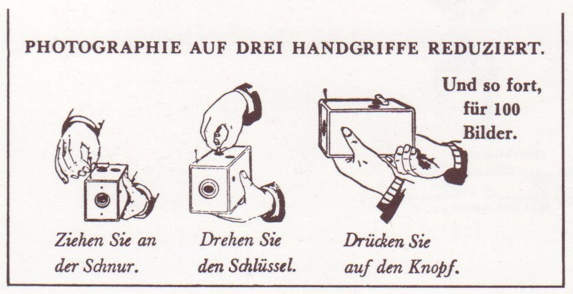
Auteur inconnu, DP
.jpg){kind=link}
© User:Arkanosis — CC-BY 4.0 — WikiConvention francophone 2016
En cas de problème
{kind=link}
- [[Wikipédia:Questions techniques]]
- [[Projet:Modèle]]
- [[Projet:Scribunto]]
- [[Projet:JavaScript]]
- [[:phab:]]
© User:Arkanosis — CC-BY 4.0 — WikiConvention francophone 2016
~~~~
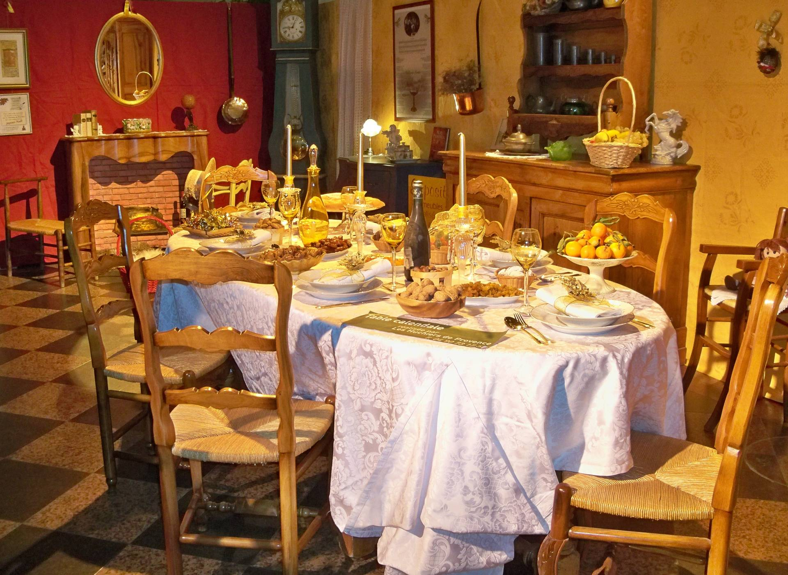
c̶ Véronique Pagnier, CC-0
{kind=link}
- frwp.org/User:Arkanosis
- jroquet@arkanosis.net
- @Arkanosis freenode, GitHub, Twitter…